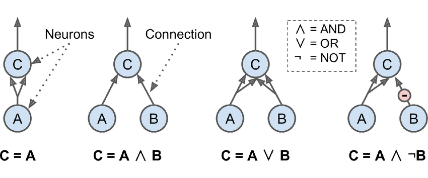
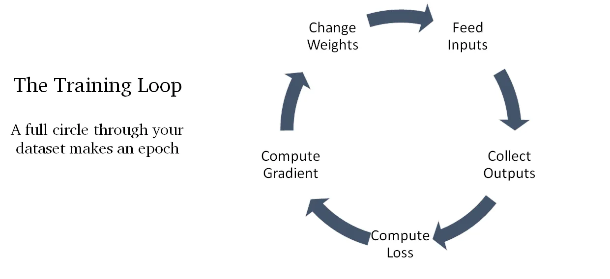
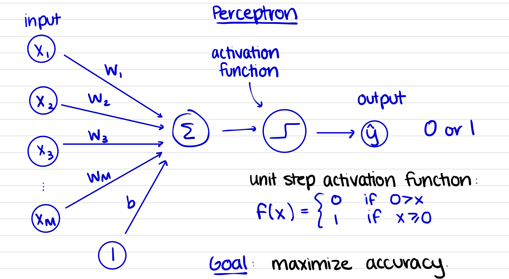
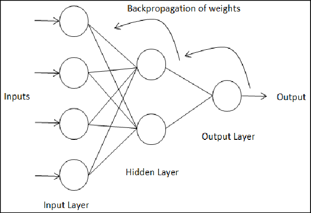
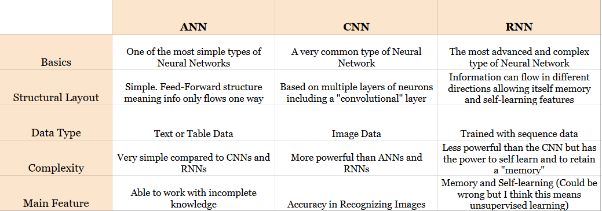

Background on how ANNS work
The first documented case of this innovation being advanced upon was when the forefathers of Neural Networks: Warren McCulloch and Walter Pitts proposed a very simple artificial neuron.
This artificial neuron consisted of one or more binary (on/off) inputs and one binary output. The output of the neuron operates when enough of its inputs are triggered.
Even with such a simple neuron model it is possible to perform some logical computations:

Source: https://www.researchgate.net/figure/ANNs-performing-simple-logical-computations-2_fig2_351547862
Seeing how this is a neuron from the mid 1950s it’s natural for the current artificial neurons to have improved.
Generally artificial neurons add together the values of its inputs and if this value is above a threshold it sends its own signal to its output which is further received by other neurons
The neuron doesn’t need to treat its inputs equally and can assign each a weight for which ones it values more or which value it doesn’t value by assigning it a negative weight.
Each neuron is connected with other neurons whose values are weighted, strengthening or weakening the signals going through the neural network.
Typically the training process involves adjusting the weight values so that the final product of the network is correct.
Usually this is in the form of using a method known as Gradient Descent.
To explain in the a vague but easy to understand way basically a neural network makes small changes to weights and biases to create small improvements and keeps doing this until it can’t improve anymore:

Source: https://towardsdatascience.com/the-beginners-glossary-of-neural-network-terms-a9617354078
In short, ANNS are a stack (group/chain) of simple learning algorithms (neurons) that process the input, and then produce an output.
This embodies the idea of deep learning by design, as each layer of neurons learns a more refined understanding of the input.
Perceptron Example and How it works
The Perceptron is one of the simplest ANN architectures. It's based on a slightly different artificial neuron known as a "Threshold Logic Unit" (TLU).
Instead of binary on/off values for the input and output it is numbers instead.
Most inputs are associated with a weight value. However sometimes a perceptron/neural network may include an input not associated with a weight value: a bias value.
This bias value allows for a neural network to move more than just its weights to maximize accuracy.
Then the TLU computes a weighted sum of all of its inputs including bias (Sum = w1*x1 + w2*x2 + w3*x3 + ... + wn+xn + b). Then this
sum is put into either a step function or a signum function. The output is the result of the sum put into the function.

Typically when you start using a perceptron by default you set the weights and bias to 0 and the accuracy of the predictions
is not great. To fix this issue the perceptron is trained which basically just involves finding the right weight values using a training algorithm.
Following the Gradient Descent method, for every prediction incorrect the training algorithm updates the weight values and bias value of the perceptron.
How do these values update exactly?
The weight updates through the use of the formula: (wi = wj + lr(y-yhat)*x) amd to update the bias: (b = bj + lr(y-yhat)
wi represents which weight is being changed
wj represents the previous weight (may equal 0 on the first pass of the formula)
lr represents the learning rate
y represents the target response
yhat represents the predicted response
x represents the respective weights' corresponding input value.
bj representing the previous bias value (may equal 0 on first pass)
These formulas are used for each weight and bias for as many times as there were errors in the output.
Also each weight from a previous use of the formula carries on over to the next use of the formula
Next we'll show a working perceptron example to help illustrate the ideas discussed.
| Week/Day | Monday | Tuesday | Wednesday | Thursday | Friday | Saturday | Sunday |
|---|---|---|---|---|---|---|---|
| Week 1: |  75° 0mm rain/hr  |
98° 0mm rain/hr |
 70° 0.3mm rain/hr |
 60° 7.0mm rain/hr |
 75° 3.0mm rain/hr |
80° 0.3mm rain/hr |
80° 0mm rain/hr |
| Week 2: | 72° 0mm rain/hr |
30° 0mm rain/hr |
59° 6.3mm rain/hr |
52° 3.2mm rain/hr |
55° 1.5mm rain/hr |
60° 0mm rain/hr |
69° 0mm rain/hr |
How does this perceptron model work?
As you can see this perceptron model has four binary inputs (X1,X2,X3,X4)
X1: The Overcast of the Day, Range:[-2 to 1] where -2 is lightning storm, -1 is a rainstorm, 0 is cloudy and 1 is sunny
X2: The Average Temperature of the Day in Fahreheit
X3: The Average Windyness of the Day with a Range:[1 to 3] where 1 represents a 0-11 mph, 2 representing 12-22 mph windspeed and 3 representing Windspeed over 22 mph
X4: The Average Amount of Precipitation expected in millimeters
The y-hat and y values of either 0 or 1 represents "No it's not nice enough to take a walk outside"
and "Yes it's nice enough to take a walk outside" respectively.
Each of its inputs has a weight associated with it and there is also a bias value inplace too.
For every iteration it measures the accuracy of the model and uses the gradient descent method to tweak the weights to get a better accuracy
Around 22000 the model is 100% accurate to the training set.
Typically the training set should be much larger than 14 sets of data so the model can give more accurate predictions.
Even if this neural network is incredibly simple it's still extremely cool as we basically trained a model
to emulate the same calculations we do when we wake up and look at the weather app.
Multilayer ANNs
While linear problems are no problem for a single-layer perceptron the performance of the perceptron on more complex non-linear problems was a huge roadblock for the advancement of ANNs.
To solve these more complex problems a neural network needs more than just one layer of neurons. The multiple layers added are referred to as “hidden” layers, since it does not constitute the input or output layer.
When an ANN has a large amount of hidden layers it’s called a “Deep Neural Network” hence the field of Deep Learning involves these ANNs.
What makes implementing multilayer neural networks more challenging is that these networks require much more than a simple gradient descent algorithm to train its weights.
What finally got the development of Neural Networks over this hump was the introduction of a “backpropagation algorithm”. As Aurelion Geron in Hands-On Machine Learning describes it “in short it is simply Gradient Descent using an efficient technique to compute the gradients automatically” in regards to every single model parameter.
This algorithm involves one training set at a time and it sends the full training set multiple times to the first hidden layer.
The Algorithm then computes the output of all the neurons in this layer and passes it onto the next layer until it reaches the output layer
This is referred to as a forward pass which is just like making predictions but preserving all results at every step to use it in the second step: the backwards pass.
Next the algorithm measures the error of the process using a loss function.
Then it computes how much each output connection contributed to this error by applying the chain rule. The chain rule is from calculus and refers to finding the derivative of a composite function.
The next step involves measuring how much error contribution came from each connection at a lower layer using the chain rule until the algorithm reaches the input layer. This backwards pass method efficiently measures the error gradient across all connection weights by using error gradient backward through the network.
Finally the algorithm performs a gradient descent step to change all the weights in the network using the error gradients.

Credit to Aurelion Geron’s explanation of backpropagation in a relatively simple way.
If you want to see a much better explanation of backpropagation but in a much more complex way here is an article for you.
https://towardsdatascience.com/understanding-backpropagation-abcc509ca9d0
Now with a way to properly train weights implementing a multilayer neural network is possible and viable.
Other Neural Networks
Before you're done learning about the basics of Neural Networks we felt it was valueable to at least introduce some other neural networks to you
Everything from this page mostly refers to a “feed-forward” type neural network, there are multiple different types and classes of neural networks that we unfortunately do not have the time to touch upon.
However we feel there are two other classes of Neural Networks that are worth touching upon, Convolutional Neural Networks (CNNs) and Recurrent Neural Networks (RNNs).
Here's a table to give a very very basic idea of some of the abilities and differences between the neural networks.
